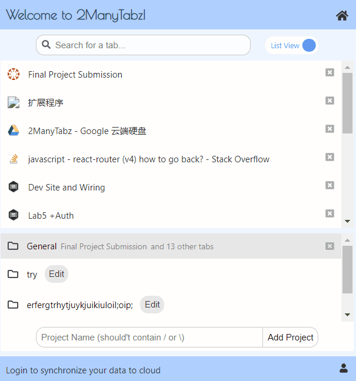

2 Many Tabz¶
Overview¶
2ManyTabs is a chrome extension to help you manage your tabs.
We all run into the silly problem of having simply too many tabs open in a chrome window at a given time. We try to organize these by opening more windows.. then more.. maybe saving a bookmark or two here and there.. but we inevitably lose time struggling to navigate our research windows by icon and memory alone. Not to mention that, upon feeling too frustrated with the current state of our Chrome window, we all resort to just giving up and clicking that red x of doom at the top left corner. We wish there were a way to organize our research on-the-fly and without very much effort.
2ManyTabz would be our solution for you. By using this extension, you would be able to rearrange your tabs easily and create projects to store your tabs as resourses.
What you can do with 2ManyTabz?¶
Work on a project¶
Create a project and work in the project
Open/close tabs in the project
Drag and drop tabs among the project
Search for tabs by their names (all the projects with tabs that fits the filter would be strengthen)
Switch working project
Edit a project (the default project: general is not editable), add notes, add “resources”(we’ll talk about it in next session)
Delete a project

Work on resources¶
When editing a project, you can add a tab as resource of the project
Add all the tabs showing in the project as resources at once!
Add tags to the resources
Filter the tags by title or by tags, then open all the resources that fits the filter at once!
Delete a resource

Synchronize your data to the cloud¶
If the user is not signed in, all the data about the projects would be stored in local storage
If the user has signed in, the data would be stored in the server’s database
If the user choose to synchronize the data, then at the begining the local data would be uploaded to the server for merging. After that, each operation would change both the local data and data in the remote database

Try it by yourself¶
You could simply go to this page:
https://chrome.google.com/webstore/detail/2manytabz/lpddhdnkblogiooieonlanekgbkcmcoa
and click on “Add to Chrome”Turn on the extension by clicking the blue radio button at the bottom right corner of the extension box.
Architecture¶
Front-end¶
We use React for the UI, and use Redux to manage the data.
Popup page components¶
App¶
Routing to 3 pages and modals
A footer to control login status (Links to an external site.)TabManager:
TabView¶
Filter tabs according to title
Switch between grid view and list view
Capture and show the screenshot for the grid view
Click to go to a tab
Click to close a tab
Drag a tab to a project
PojectList¶
Show project list (projectName + tabName + and n other tabs)
Show projects with tabs that fulfill the filter as strong
Switch active project (class : choosen)
Close all the tabs in the project
Create a new project (check if the name exists)
(Links to an external site.)ProjectDetail:
ProjectEditor¶
Edit the name and note of a project
TabView:
Basicly the same as tab manager (open/close), but can not drag a tab
Add a tab to current project
Delete project and go back to tab manager if succeed
ResourceView¶
Add all opened tabs in the project to resource
Filter: select box + input, filter by tab or title
OpenAll: open all the tabs that fits the filter
Open one tab: by clicking a resource
Update the resource: when the title and icon of the resource * doesn’t match the tab with same url
Resource: Display the title and tags of a resource
Click the down button to show detail of the resource and edit the tags
Bluring event would upload the change of the tags
Delete the resource
Modal¶
Recently we have a synchronize modal (To switch the synchronize status), a dialog modal and an error modal
Background page and store¶
For the front end, data is stored in the background
Popup page uses actions (redux for chrome would send them as messages) to change data in store
Several listeners are added to listen to tab update/ activate / remove events
Since direct communication (through stringified js objects, could not convey functions) can not handle promises or handle error, we use aliases to conduct actions in background pages
Data in store:
const initialState = {
tabs: {
tabList: {},
activeTab: -1,
activeWindow: -1,
movingTab: null,
},
projects: {
projectList: loadProjectList(), // An array of projects
currentProject: JSON.parse(Values.emptyProject), // { projectName: '', projectNote: '', resources: {} }
activeProj: Values.defaultProject, // General
synchronizing: 0,
},
preferences: loadPreferences(),
// View: 0 -> ListView, 1 -> GridView
// Synchronize: -1 -> unknown, 0 -> don't synchronize, 1 -> synchronize
auth: {
authenticated: false,
userName: '',
},
error: {
errorMsg: '',
},
};
A listener is added to store. If the state of store has been changed, write the new preferences to local storage. If has been logged in and not using synchronize, would not update project info, otherwise write the new project list and new current project
Communicate with the backend¶
Methods are defined in src/modules/ajax.js
Methods are called from src/background/aliases4project
Back-end¶
We use Express + MongoDB for the backend.
Tab Model
URL
Title
Icon Url
Tags
Parent (project id)
Project/Folder Model
Name
Custom Notes
User (id of the user who created the project)
User model
Name
Email
Password
Screenshots¶

Authors¶
Yaorui Zhang
Jialing Wu
Katherine Taylor
Jackson Harris
Nathan Albrinck
Yunjin Tong
Acknowledgments¶
References¶
https://blog.csdn.net/weixin_41646716/article/details/89375896
https://blog.logrocket.com/building-a-modal-module-for-react-with-react-router/
https://dev.to/tchan/web-automation-using-puppeteer-inside-a-chrome-extension-318o
https://medium.com/@jrcreencia/persisting-redux-state-to-local-storage-f81eb0b90e7e